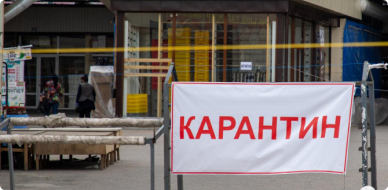
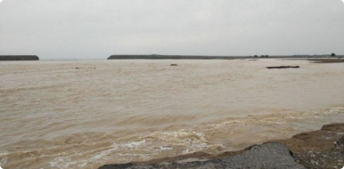
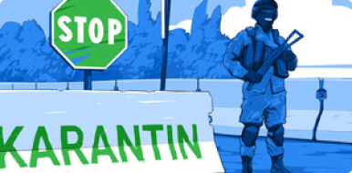

| Namanganliklar24 | $ 10137.2 | P 138.26 | E 10988.72 |
| Узбекистана Мир Экономика Политика Общество Технологии Спорт Культура Происшествия Туризм |
|
|
|
|
|
Мирзиёев рассказал, зачем было построено
|

Карантин в Узбекистане продлен до 1 июня |

Обмелевшая Сардоба: стихия или
|
|
Следствие проверяет четыре версии
|
Выявлено еще 7 случаев коронавируса |

Итоги второго месяца карантина |
Хотите узнать новости первыми? подключите уведомления! Включит уведомления!
|
|
|
Всегда будьте в курсе последних новостей! Установите мобильное приложение NAMANGANLIKLAR24 и все новости в вашем кармане! |
| NAMANGANLIKLAR24 | Подписывайтесь на наш канал в Telegram и будьте всегда в курсе самых последних новостей: | Подписатся |
| О сайте Воспроизводство, копирование, тиражирование, распростране ние и иное использование информации с сайта «NAMANGANLIKLAR24.UZ» возможно только с предварительного письменного разрешения редакции. |
Информация о сайте Напишите нам Реклама Прислать новость |
Использование материалов Темы дня Наша команда |